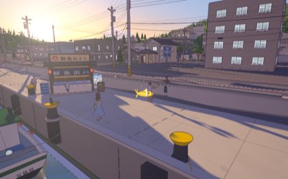
歩き出しの正面。最初に光る
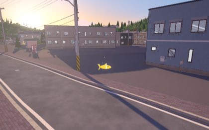
内湾の遊歩道
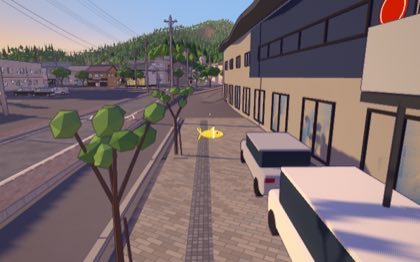
迎のまえ
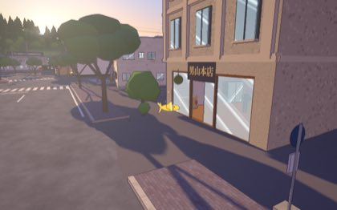
男山の坂の下
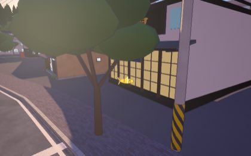
角星の通り
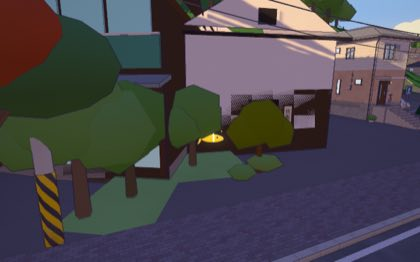
竹駒神社の参道
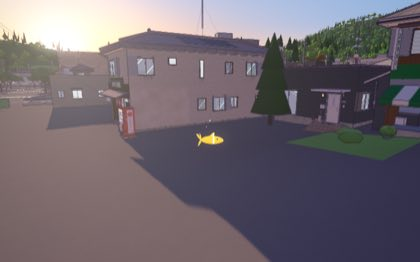
遊歩道の先、男山のほう
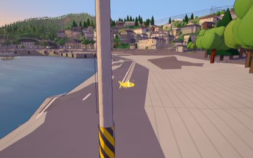
浮見堂へ渡る岸
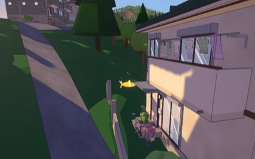
熊野神社の石段
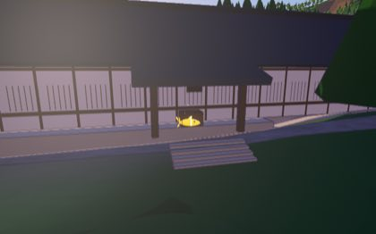
宝厳寺の門前
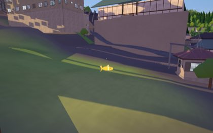
カトリック教会の坂
愛宕神社の下
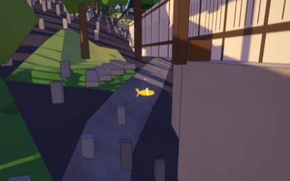
観音寺の参道
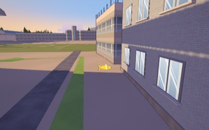
図書館の前
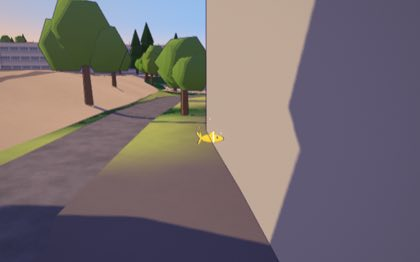
市民会館の前
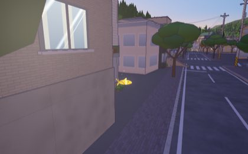
マンボウの広場
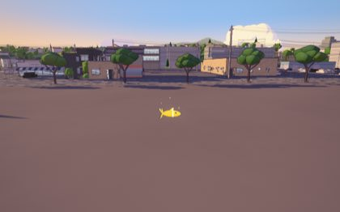
仲町の公園
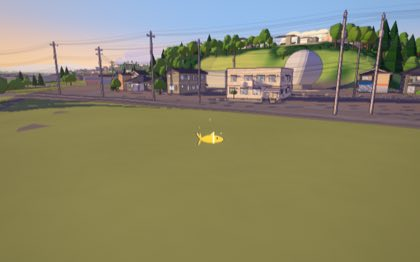
大川の公園
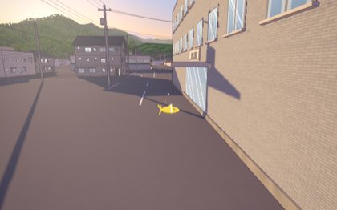
鹿折のまちなか
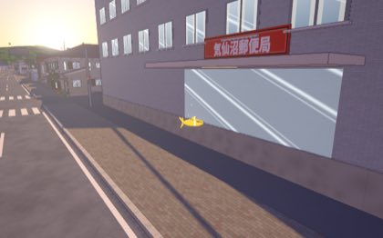
郵便局の角
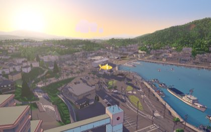
プラザホテルの屋根の裏側
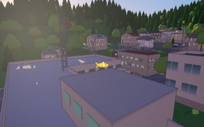
市役所の塔の格子
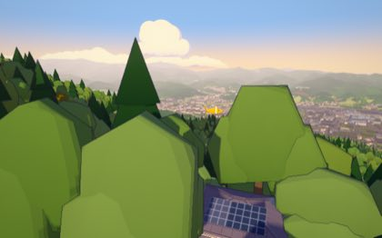
安波山の見晴台
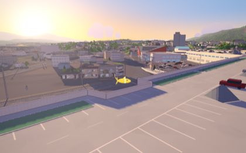
魚市場のクレーン
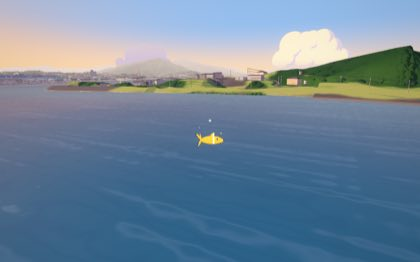
かなえおおはしの塔
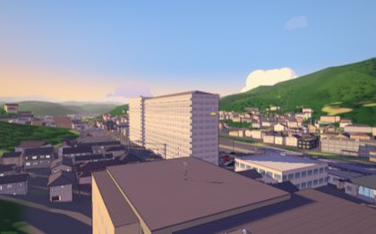
パールシティの屋根
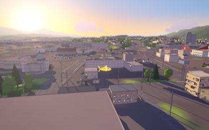
パークホテルの屋根
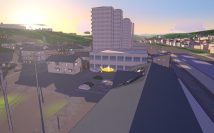
駅の屋根
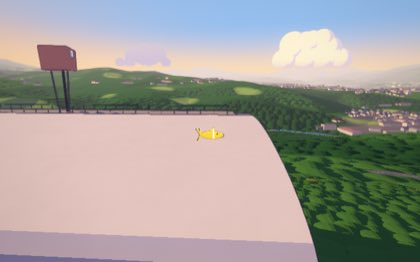
リアスアークの屋根
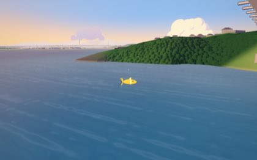
大島の高台
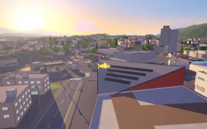
海の市の屋根
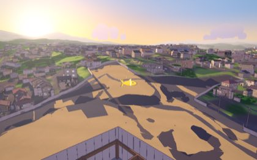
新しい庁舎のクレーン
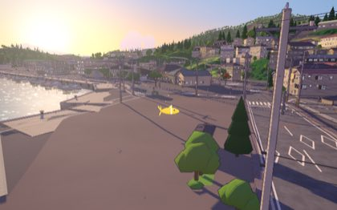
神明崎の灯台のそば
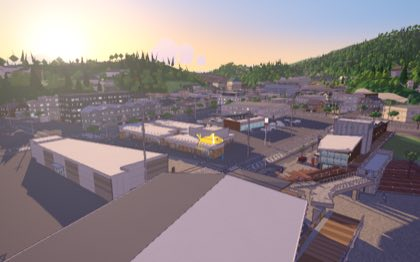
桟橋の屋根
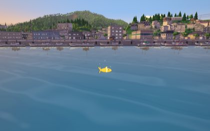
内湾のブイ
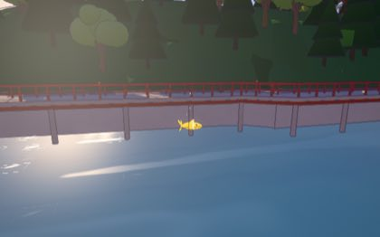
神明崎の沖
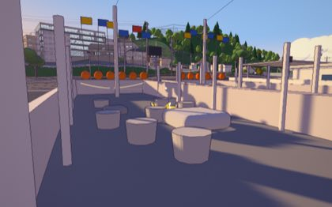
湾のまんなか
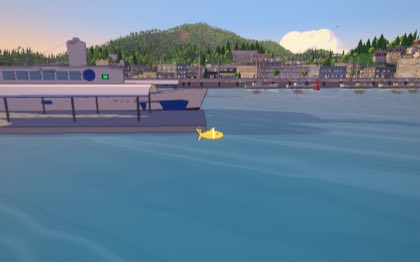
七番埠頭の沖
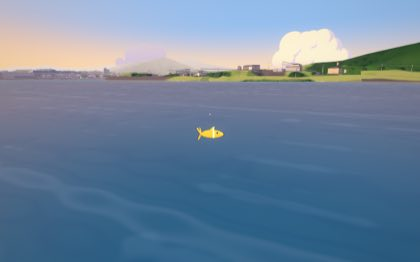
かなえおおはしの下
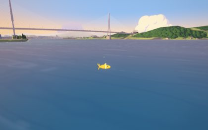
大島へ向かう水道
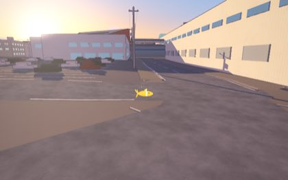
魚市場への道
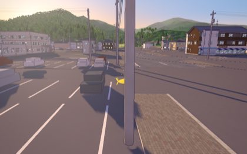
鹿折の橋
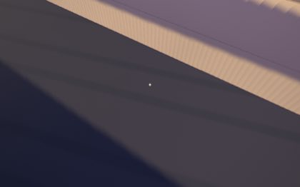
気仙沼大橋
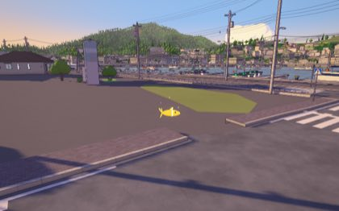
港町の道
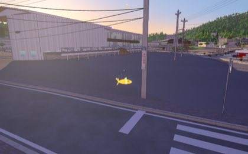
南町の道
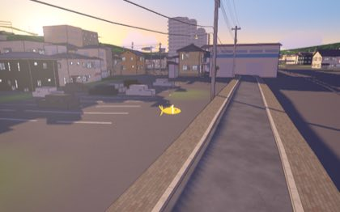
駅前の道
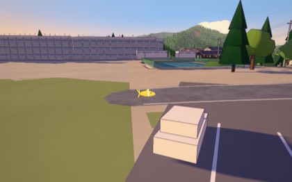
まちを抜ける道
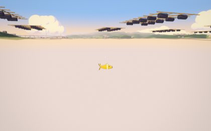
南の筏の下。縄を見上げる
湾口のわかめの縄
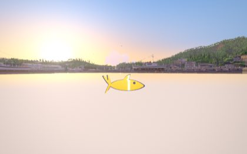
浮見堂の浅瀬